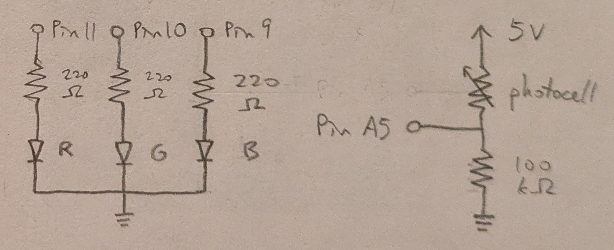
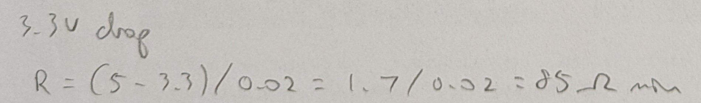
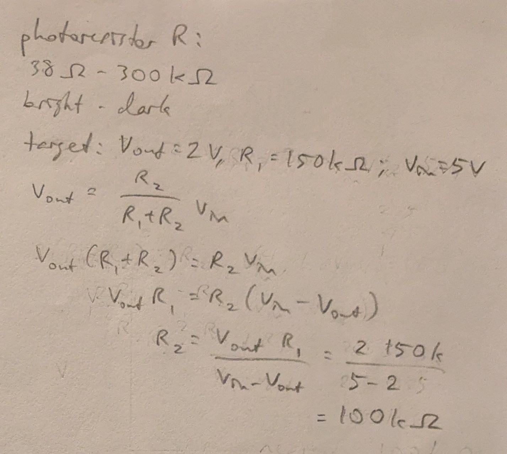
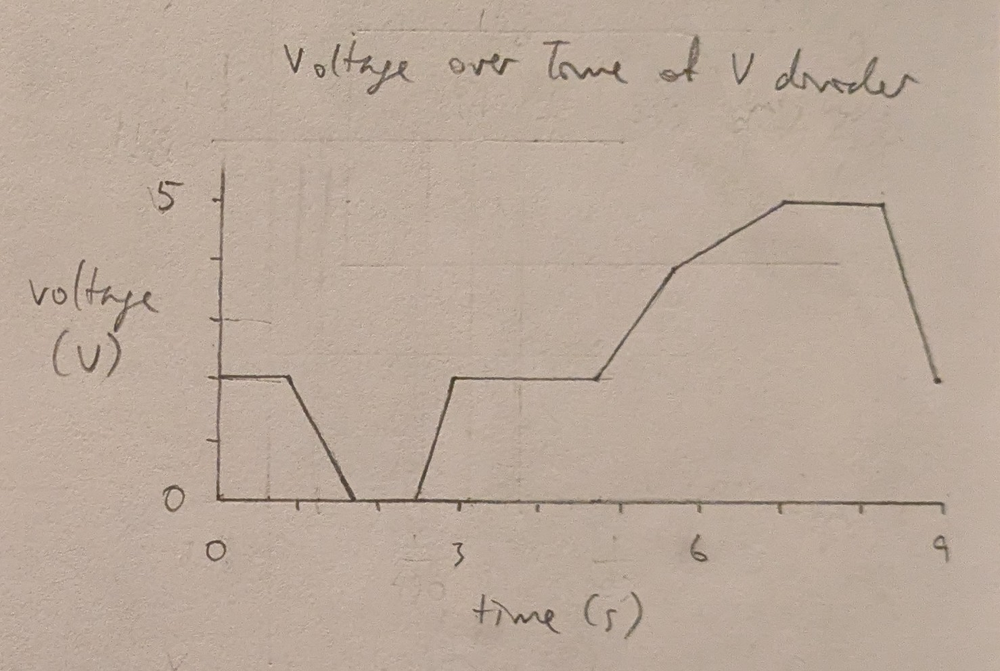

Requirements
- sensor which changes the state of an output device
- output device, not a single LED
- analogRead()
- analogWrite()
- map()
- if-statement
- write to Serial, not the same message as the example code
Schematic
The sensor is a photocell, with power provided by the 5V pin and analog reading through pin A5.
The output device is made up of 3 LEDs.
Each diode is wired to its own pin providing power through analog write.
The calculation below yielded the minimum resistances needed for each LED.
Calculation
Red and Green LEDs:

Blue LED:
Resistor in Voltage Divider with Photocell:
The calculation below yielded the target resistance for R2 in the voltage divider with the photocell as R1.
The photocell was measured to have a resistance of around 38 Ohms in the brightest environment and around 300k Ohms in the darkest environment for its intended operating range, so the needed resistance for R2 was calculated with around halfway brightness resulting in around half of voltage in as voltage out.
220 Ohm resistors were used for all 3 LED resistors.
- For red and green, it was the closest resistor value which exceeded the minimum of 160.
- For blue, the minimum was 100, but I would not use exactly 100, since fluctuations could cause the necessary resistance to actually be more than 100 at times. Thus 220 was the next smallest value available.
For the photocell, a resistor with the calculated resistance of 100k Ohms was used.
Circuit

Firmware
link to code file
/*
Input
Built with Examples/03.Analog/AnalogInOutSerial
The 3 LEDs get brighter when the environment gets dimmer
and dimmer when the environment gets brighter.
The LEDs are attached to pins 9, 10, and 11.
The photocell is connected to 5V power and analog input through pin A5.
modified 20 Oct 2025
by Heidi Wang
*/
// the number of the input pin for the photocell
const int meterPin = A5;
// the number of the pin for the Red LED
const int ledPinR = 11;
// the number of the pin for the Green LED
const int ledPinG = 10;
// the number of the pin for the Blue LED
const int ledPinB = 9;
// the value read as input from the photocell
int sensorValue = 0;
// the last value of sensorValue
int lastIn = 0;
// the value to be written as output to the LEDs
int outputValue = 0;
// the setup function runs one time when the program is started
void setup()
{
// initialize the sensor pin as an input
pinMode(meterPin, INPUT);
// initialize the Red LED pin as an output
pinMode(ledPinR, OUTPUT);
// initialize the Green LED pin as an output
pinMode(ledPinG, OUTPUT);
// initialize the Blue LED pin as an output
pinMode(ledPinB, OUTPUT);
// begin serial communication
Serial.begin(9600);
}
// the loop function loops indefinitely
void loop()
{
// read the analog in value in 10bit:
sensorValue = analogRead(meterPin);
// map it from 10bit to the range of the analog out in 8bit:
outputValue = map(sensorValue, 0, 1023, 0, 255);
// write the analog out value to the output pins:
analogWrite(ledPinR, 255-outputValue);
analogWrite(ledPinG, 255-outputValue);
analogWrite(ledPinB, 255-outputValue);
// print the results to the serial monitor:
Serial.print("sensor = ");
Serial.print(sensorValue);
Serial.print("\t output = ");
Serial.print(outputValue);
// print whether the sensor value increased or decreased
if (sensorValue > lastIn) {
// sensor value increased; print message accordingly
Serial.println("\t +++++ brighter, less resistance, more voltage")
} else {
// sensor value decreased; print message accordingly
Serial.println("\t ----- dimmer, more resistance, less voltage")
}
// update lastIn to prepare for the next loop
lastIn = sensorValue
// wait 2 milliseconds before the next loop for the
// analog-to-digital converter to settle after the
// last reading:
delay(2);
}
Operation
Questions
-
In this voltage divider, the variable resistor is currently R1 and R2 is constant, and the sensor value is inversely mapped to the output value in the firmware.
If the variable resistor is R2 and R1 is constant, then the sensor value must be directly mapped to the output value in the firmware to achieve the same behavior.
For example, if Vin=5, R2=100k:
- If R1=5k:
- Vout = R2/(R1+R2)*Vin = 100k/(5k+100k)*5 = 4.76V
- If R1=200k:
- Vout = 100k/(200k+100k)*5 = 1.67V
However, if the values for R1 and R2 are switched, ie if R1=100k:
- If R2=5k:
- Vout = 5k/(100k+5k)*5 = 0.24V
- If R2=200k:
- Vout = 200k/(100k+200k)*5 = 3.33V
This shows that if the variable and constant resistors are switched, then the mapping of input to output value must be inverted to achieve the same behavior.
- 
-
map() for 10bit read to 8bit write is used as map(value, 0, 1023, 0, 255). 16bit is 65,536, which shifted 1 down to start at 0 instead of 1 is 65,535, so map() for 16bit read to 10bit write would be used as map(value, 0, 65535, 0, 1023).